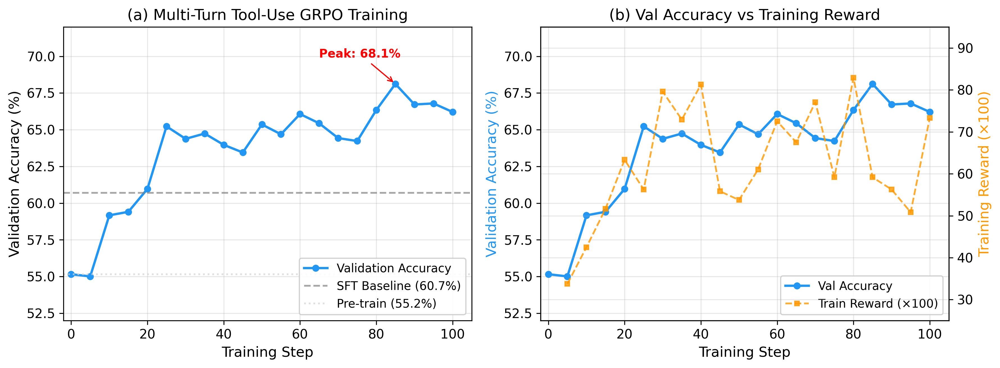

01
Multi-Domain Medical Gymnasium
A Gymnasium-compatible environment: 10 clinical domains, 3.6K+ tasks, 135 domain-specific tools, an 828K-passage knowledge base, and a safety-aware 5D reward.
for Medical Agents
Clinical reasoning demands multi-step interactions — gathering patient history, ordering tests, interpreting results, and making safe treatment decisions — yet no unified environment exists to train generalizable medical AI agents through reinforcement learning. We present a comprehensive empirical study of multi-turn agentic RL for medical AI, built on Healthcare AI GYM, a Gymnasium-compatible environment spanning 10 clinical domains with 3.6K+ tasks and domain-specific tools.
Our analysis reveals three compounding pathologies absent from single-turn settings: response explosion, multi-turn collapse into verbose monologues, and distillation instability — all stemming from the misalignment of sparse terminal rewards with sequential clinical trajectories. To stabilize training, we propose Turn-Level Truncated On-Policy Distillation (TT-OPD), a self-distillation framework where a gradient-free EMA teacher provides dense, outcome-aware KL regularization at every conversation turn — achieving accuracy comparable to vanilla GRPO with controlled response length and sustained tool use. We further identify a fundamental agentic–textual transfer gap: RL improves procedural competence but does not transfer to text-based QA benchmarks. The environment, training pipeline, and all experimental artifacts are publicly available.
Healthcare AI GYM closes the loop between a clinical agent, a Gymnasium environment, a tool & knowledge ecosystem, and a reward-driven RL trainer. Press Play to watch a single training episode flow through the system — each step highlights one component and explains what it does.
The environment samples a clinical task and returns the first observation — a patient scenario plus the available tool menu — to the agent.
A Gymnasium-compatible environment: 10 clinical domains, 3.6K+ tasks, 135 domain-specific tools, an 828K-passage knowledge base, and a safety-aware 5D reward.
A rigorous comparison of GRPO, DAPO, Dr. GRPO and GSPO that exposes the trade-off between peak accuracy (62.0%) and training stability.
Outcome-aware regularization: correctness signals are injected into the teacher's context but withheld from the student, giving dense turn-by-turn guidance with controlled response length.
Ablations trace the failure progression — KL collapse → response explosion — and identify multi-turn collapse as an agentic-specific failure mode absent from single-turn OPD.
RL-driven procedural competence (+22% composite reward) does not automatically translate to text QA, due to a 51:1 format-reward dilution ratio.
PubMed abstracts, clinical guidelines (AHA, ACOG, SSC) and textbooks, indexed via BM25 and exposed as tool calls. Built on Self-BioRAG and OLAPH.
R = w·Acc + w·Proc + w·Safe + w·Fmt + w·Coh
A critical safety violation caps the composite score at 0.1 — directly countering format-reward dilution. An optional assertion dimension (0.15) is added when rubric annotations exist.
On-policy distillation collapses in agentic settings because the teacher goes stale as the student explores. TT-OPD keeps a gradient-free EMA teacher and feeds it outcome-aware hints that the student never sees — turning sparse terminal rewards into dense, per-turn guidance. Press Play to walk through one optimization step.
For each prompt, the student samples n = 3 multi-turn trajectories — interleaving think, search and submit actions in the GYM.
θ_T ← 0.995·θ_T + 0.005·θ_S, updated every 5 steps with a hard-copy fallback every 30 — the teacher tracks the student without ever taking a gradient.
Correct trajectories get confirmatory cues, incorrect ones get corrective redirection. Hints enter the teacher's context but are removed from its logprobs — the student never sees them.
Concise correct answers are rewarded most; reward decays with length and incorrect answers are penalized more as they grow — preventing monotonic explosion toward L_max.
Distillation is most valuable early (steps 1–40) and should be monotonically phased out — not adaptively toggled. Each run dies a different death.
Unconditional EMA absorbs corrupted student weights; once KL > 0.7 a positive feedback loop collapses accuracy to 0%.
A static distill coef (4.0) is 10–20× the RL gradient; when the frozen teacher goes stale it overwhelms optimization.
After distillation auto-disables for 100+ steps, a natural KL drop re-engages a 120-step-stale teacher → grad explosion (142→301) → permanent learning arrest.
All models use a Qwen3.5-9B backbone. Base (text) is single-turn log-prob evaluation with no tools; Base+AR adds the multi-turn AgentRunner (135 tools + 828K KB) without RL; GRPO and TT-OPD are RL-trained. Best per row is highlighted.
| Category | Benchmark | Basetext | Base+AR | GRPO | TT-OPD |
|---|---|---|---|---|---|
| MC QA | MedQA (USMLE) | 70.7 | 78.8 | 85.5 | 87.1 |
| MMLU-Med. (6 sub.) | 83.8 | 60.6 | 60.1 | 65.5 | |
| MedMCQA | 63.8 | 55.8 | 58.0 | 66.2 | |
| Visual QA | VQA-RAD | 52.5 | 63.2 | 60.7 | 63.1 |
| PathVQA | 40.5 | 38.7 | 41.5 | 45.3 | |
| SLAKE | 79.0 | 30.6 | 29.5 | 32.1 | |
| PMC-VQA | 57.9 | 35.1 | 34.2 | 38.9 | |
| VQA-Med-2021 | 8.6 | 9.8 | 10.7 | 15.2 | |
| Quilt-VQA | 25.2 | 27.8 | 25.2 | 30.7 | |
| EHR | MIMIC-III | 58.5 | 62.1 | 61.1 | 62.7 |
| eICU | 53.2 | 55.9 | 55.5 | 57.1 | |
| LFQA | LiveQA | 53.2 | 58.2 | 57.7 | 62.5 |
| MedicationQA | 49.5 | 53.1 | 55.8 | 60.9 | |
| HealthSearchQA | 39.8 | 41.9 | 39.5 | 45.3 | |
| KQA-Golden | 55.7 | 62.1 | 65.3 | 64.1 | |
| KQA-Silver | 52.5 | 61.7 | 64.9 | 62.8 |

A follow-up study asks whether agentic RL writes tool-use reasoning into the model's weights, or whether the agent is just reading the tool spec from its context window. We answer it with Progressive Spec Withdrawal (PSW) — a curriculum that strips tool definitions out of the prompt during training — and a forensic taxonomy of 31,500+ tool calls.
search_pubmed share rises 21.2% → 93.5% — the model keeps only its most reward-efficient toolAccuracy actually rises after specs are removed (58.0% → 61.7%, matching GRPO's 62.0% peak), and PSW reaches 90% with specs — so the curriculum teaches the model to better exploit tool definitions, not to memorize a capability the base model's post-training already had.
Across 31,500+ tool calls, failures fall into four distinct modes — each with its own cause and its own signature over training.
A real tool is called with parameters that don't exist in its schema.
Entirely fabricated tools (web_search, google_search) that were never defined.
Broken JSON or unclosed tags that abort the call before it runs.
Correct syntax, wrong tool for the job — the right call in the wrong place.
RL self-corrects its own vocabulary. When specs are withdrawn, phantom tool names surface around steps 35–100 — then reward pressure prunes them away by step 300. Only tools that produce valid, correct answers survive.
@article{jeong2026healthcareaigym,
title = {Healthcare AI GYM for Medical Agents},
author = {Jeong, Minbyul},
journal = {arXiv preprint arXiv:2605.02943},
year = {2026}
}